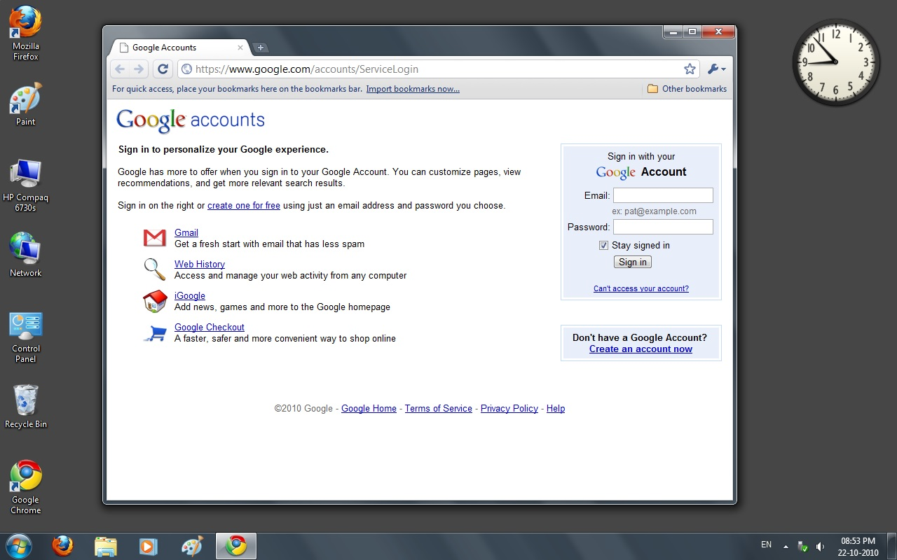
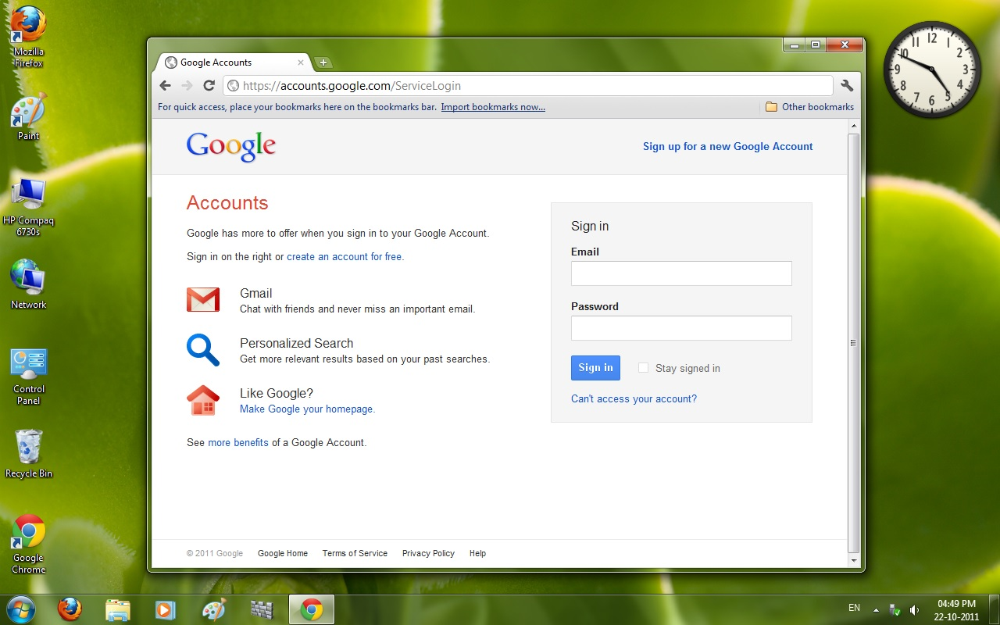

How did Google's login page changed in just 1 year (2010 and 2011)
22/10/2025 3:10 PM IST
@NiralBhatt
- Hello guys, and today we have two pictures, one is from 22 October 2010 (15 years old) and other one from 22 October 2011 (14 years old).
- The first image has very minimal CSS, old Google logo which had been replaced with the new one 15 November 2010, as per Google's official blog from the same day for the redesign.
- Well in mid 2011 we received one more redesign, with modern looking CSS in each an every Google's services and pages.
- The second from 22 October 2011 shows the same. The web browser used here is Google Chrome, whose layout has been slightly altered.
- On 19 October 2010, Chrome 7.0 was launched for Windows which made the UI more smoother, this was earlier than the first image but we know it takes time to upadte to a newer version after its rolled out.
- In March 2011 for teh first time Chrome's logo was updated through the Beta, followed by on its stable release in May 2011.
- The link to this page has also changed (see both the images).
- Just have a look and let me know what else has been changed between the two images.
- And what do you think has this page significantly changed in just one year?

Google Accounts as on 22 October 2010

Google Accounts as on 22 October 2011
© 2025 Niral Bhatt. All rights reserved.